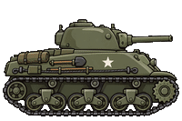
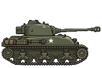
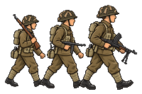
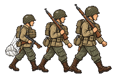
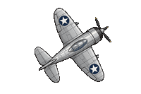
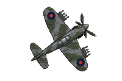

The Axis Campaign · stage 14 of 17 · 1944
As the Wehrmacht: Die Wacht am Rhein
France is lost and the enemy stands on the frontier of the Reich. In the north British armour is driving for the Rhine bridges behind a carpet of parachutists; in the centre the Americans are at the gates of Aachen, the first German city; in the south Patton is in front of Metz. But their supply lines run all the way back to Normandy, and the Westwall, neglected for four years, is manned again. Hold the bridge at Arnhem. Hold Aachen and Cologne behind it. Hold Metz. If the Rhine holds until winter, there will be time for one more throw.
- Date
- 17 September 1944
- Turns
- 13
- You command
- German forces, 21 units and 2 attached
- Against
- Allied forces, 24 units
- To win
- Hold at least 2 of the 4 objectives when turn 13 ends; hold all of them for a decisive victory.
- Objectives
- Arnhem, Cologne, Aachen and Metz
- Weather
- Clear
- Reinforcements
- 0 for you, 8 for the enemy, arriving during the battle
- In a match
- Even
Your forces 23 units


The enemy 24 units

M4 ShermanArmour×3
Sherman FireflyArmour ChurchillArmour
ChurchillArmour M10Anti-tank and assault guns
M10Anti-tank and assault guns US InfantryInfantry×7
US InfantryInfantry×7
Infantry '43Infantry×3
AirborneInfantry×2 Field ArtilleryArtillery×3
Field ArtilleryArtillery×3 P-51 MustangFighters
P-51 MustangFighters
P-47 ThunderboltGround-attack aircraft
TyphoonGround-attack aircraft
In the campaign. It follows Operation Bagration or The Battle of Normandy. A decisive victory leads to The Battle of the Bulge; any other result to The Vistula–Oder Offensive.